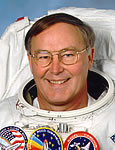

Lyndon B. Johnson Space Center
Houston, Texas 77058
|
National Aeronautics and Space Administration Lyndon B. Johnson Space Center Houston, Texas 77058 |
 |
Biographical Data |
||
Jerry L. Ross (Colonel, USAF, Ret.)
NASA Astronaut (Former)
PERSONAL DATA: Born January 20, 1948, in Crown Point, Indiana. He is married to the former Karen S. Pearson of Sheridan, Indiana. They have two children. He enjoys genealogy, traveling, photography, stained glass, woodworking and model rocketry. His parents, Donald J. Ross and Phyllis E. (Dillabaugh) Ross, are deceased. Karen’s mother, Wilma Pearson, resides in Sheridan, Indiana. Her father, Morris D. Pearson is deceased.
EDUCATION: Graduated from Crown Point High School, Crown Point, Indiana, in 1966; received Bachelor of Science and Master of Science degrees in Mechanical Engineering from Purdue University in 1970 and 1972, respectively.
ORGANIZATIONS: Lifetime Member of the Association of Space Explorers, the Purdue Alumni Association and the Clan Ross Association of the USA. He served on the Board of Directors of the Association of Space Explorers, USA from 2011 through 2013.
SPECIAL HONORS: Awarded two Defense Superior Service Medals, the Air Force Legion of Merit, four Defense Meritorious Service Medals, two Air Force Meritorious Service Medals and the National Intelligence Medal of Achievement. He was a Distinguished Graduate of the United State Air Force Test Pilot School and the recipient of the Outstanding Flight Test Engineer Award, Class 75B. Ross received 15 NASA medals. He was awarded the American Astronautical Society’s Victor A. Prather Award for spacewalking achievements (1985, 1990 and 1999) and the Flight Achievement Award (1992, 1996, 1999 and 2002). Ross received an Honorary Doctor of Science degree from Purdue University in 2000 and the Distinguished Engineering Alumnus Award from Purdue University in 2004. His home town school system has named an elementary school in his honor. In May 2014, Ross was inducted into the Astronaut Hall of Fame.
AIR FORCE EXPERIENCE: Ross, an Air Force ROTC student at Purdue University, received his commission upon graduation in 1970. After receiving his master’s degree from Purdue in 1972, he entered active duty with the Air Force and was assigned to the Ramjet Engine Division of the Air Force Aero-Propulsion Laboratory at Wright-Patterson Air Force Base, Ohio. He conducted computer-aided design studies on ramjet propulsion systems, served as the project engineer for captive tests of a supersonic ramjet missile using a rocket sled track and served as the project manager for preliminary configuration development of the ASALM strategic air-launched missile. From June 1974 to July 1975, he was the Laboratory Executive Officer and Chief of the Management Operations Office. Ross graduated from the United States Air Force Test Pilot School’s Flight Test Engineer Course in 1976 and was subsequently assigned to the 6510th Test Wing at Edwards Air Force Base, California. While on assignment to the 6510th’s Flight Test Engineering Directorate, he was project engineer on a limited flying qualities evaluation of the RC-135S aircraft and, as lead B-1 flying qualities flight test engineer, he was responsible for the stability and control and flight control system testing performed on the B-1 aircraft. He was also responsible, as chief B-1 flight test engineer, for training and supervising all Air Force B-1 flight test engineer crewmembers and for performing mission planning for the B-1 offensive avionics test aircraft.
Ross has flown in 21 different types of aircraft, holds a private pilot’s license and has logged more than 4,100 flying hours, the majority in military aircraft. He retired from the Air Force on March 31, 2000.
NASA EXPERIENCE: In February 1979, Ross was assigned by the Air Force to the Payload Operations Division at the Lyndon B. Johnson Space Center as a payload officer/flight controller, responsible for the flight operations integration of military payloads into the space shuttle. Ross was selected as an astronaut in May 1980. His technical assignments since then have included EVA (spacewalks); Robotics; Space Shuttle Landing Chase Team; support crewman for STS-41B, 41C and 51A; spacecraft communicator (CAPCOM) during STS-41B, 41C, 41D, 51A and 51D; Chief of the Mission Support Branch; member of the 1990 Astronaut Selection Board; Acting Deputy Chief of the Astronaut Office; Chief of the Astronaut Office EVA and Robotics Branch and Astronaut Office Branch Chief for Kennedy Space Center Operations Support. From 2004 to 2007, he served as the Chief Astronaut of the NASA Engineering and Safety Center (NESC).
Ross flew as a mission specialist on STS-61B (1985), STS-27 (1988) and STS-37 (1991); was the Payload Commander on STS-55/Spacelab-D2 (1993); and served as a mission specialist on the second space shuttle to rendezvous and dock with the Russian Space Station Mir, STS-74 (1995), the first International Space Station assembly mission, STS-88 (1998) and on another Space Station assembly mission, STS-110 (2002). A veteran of seven space flights, Ross has more than 1,393 hours in space, including 58 hours and 18 minutes of EVA on nine spacewalks. He was the first human to be launched into space seven times. These seven flights comprise a world record that Ross now shares with one other NASA astronaut. Both his number of spacewalks and time on spacewalks are all time second highest among NASA astronauts.
Ross served as Chief of the Vehicle Integration Test Office at the Johnson Space Center from 2003 through 2011.
He retired from NASA on his birthday, January 20, 2012, and released his autobiography, “Spacewalker: My Journey in Space and Faith as NASA’s Record-Setting Frequent Flyer” in January 2013. He will release a children’s book, “Becoming a Spacewalker, My Journey to the Stars” in September 2014.
SPACEFLIGHT EXPERIENCE: STS-61B was launched at night from Kennedy Space Center, Florida, on November 26, 1985. During the mission, the crew deployed the MORELOS-B, AUSSAT II and SATCOM Ku-2 communications satellites and operated numerous experiments inside the space shuttle. Ross conducted two 6-hour spacewalks to demonstrate Space Station construction techniques with the EASE/ACCESS experiments. After completing 108 Earth orbits in 165 hours, 4 minutes and 49 seconds, STS-61B Atlantis landed on Runway 22 at Edwards Air Force Base, California, on December 3, 1985.
STS-27 Atlantis launched from the Kennedy Space Center, Florida, on December 2, 1988. The mission carried a Department of Defense payload as well as a number of secondary payloads. After 68 Earth orbits in 105 hours, 6 minutes and 19 seconds, the mission concluded with a dry lakebed landing on Runway 17 at Edwards Air Force Base, California, on December 6, 1988.
STS-37 Atlantis launched from KSC on April 5, 1991, and deployed the 35,000-pound Gamma Ray Observatory, the heaviest civilian satellite ever launched by a Shuttle and the second of NASA’s four “great observatories.” Ross performed two spacewalks totaling 10 hours and 49 minutes to manually deploy the obstructed Gamma Ray Observatory antenna and to test prototype Space Station EVA hardware. After 93 Earth orbits in 143 hours, 32 minutes and 44 seconds, the mission concluded with a landing on Runway 33 at Edwards Air Force Base on April 11, 1991.
From April 26, 1993, to May 6, 1993, Ross served as Payload Commander/Mission Specialist on STS-55 aboard the Orbiter Columbia. The mission launched from Kennedy Space Center and landed at Edwards Air Force Base, Runway 22, after 160 Earth orbits in 239 hours and 45 minutes. Nearly 90 experiments were conducted during the German-sponsored Spacelab D-2 mission to investigate life sciences, material sciences, physics, robotics, astronomy and Earth and its atmosphere.
STS-74 was NASA’s second space shuttle mission to rendezvous and dock with the Russian Space Station Mir. STS-74 launched on November 12, 1995, and landed at Kennedy Space Center on November 20, 1995. During the 8-day flight the crew aboard Atlantis attached a permanent docking module to Mir, conducted a number of secondary experiments and transferred 3,000 pounds of supplies and experiment equipment between Atlantis and the Mir station. The STS-74 mission was accomplished in 129 Earth orbits, with Atlantis traveling 3.4 million miles in 196 hours, 30 minutes and 44 seconds.
STS-88 Endeavour (December 4 to December 15, 1998) was the first ISS assembly mission. During the 12-day mission, the U.S.-built Unity module was mated with the orbiting, unmanned Russian Zarya module. Ross performed three spacewalks totaling 21 hours and 22 minutes to connect umbilicals and attach tools and hardware to the exterior of the core modules of the station. The crew also deployed two small satellites, Mighty Sat 1 and SAC-A. The mission was accomplished in 185 Earth orbits in 283 hours and 18 minutes.
STS-110 Atlantis (April 8-19, 2002) was the 13th Shuttle mission to visit the ISS. This, the first mission in the final phase of the ISS assembly, included the delivery and installation of the S0 (S-Zero) Truss, the first use of the station’s robotic arm to maneuver spacewalkers around the station and the first time that all of the spacewalks performed on a Shuttle mission were based from the Station’s Quest Airlock. Ross performed two EVAs totaling 14 hours and 9 minutes. Mission duration was 259 hours and 42 minutes, with 171 Earth orbits.
Ross supported the Space Shuttle Program as an astronaut from before the first launch in April 1981 to the last landing in July 2011. He also supported the International Space Station Program from its inception through the completion of assembly of the space station in 2011.
MAY 2014